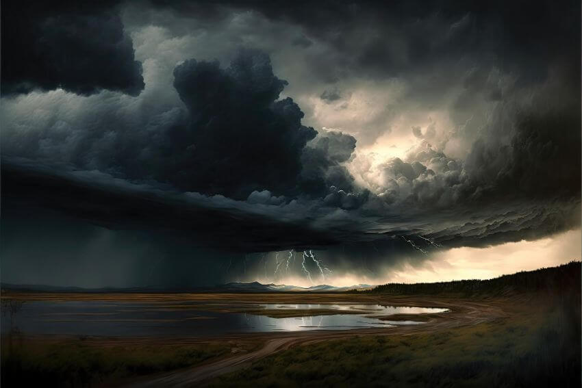

«... με τον λόγον του Θεού οι ουρανοί έγειναν έκπαλαι και η γη συνεστώσα εξ ύδατος και δι’ ύδατος, διά των οποίων ο τότε κόσμος απωλέσθη κατακλυσθείς υπό του ύδατος· οι δε σημερινοί ουρανοί και η γη διά του αυτού λόγου είναι αποτεταμιευμένοι, φυλαττόμενοι διά το πυρ εις την ημέραν της κρίσεως και της απωλείας των ασεβών ανθρώπων» (Β΄ Πέτρου γ΄ 5-7)
Με τη χάρη του Κυρίου, από αυτό το μήνα θα ξεκινήσουμε ένα σύντομο αφιέρωμα στον κατακλυσμό, ένα γεγονός που έλαβε χώρα την εποχή του Νώε και το οποίο κατά καιρούς έχει διεγείρει πολλά ερωτήματα και αμφισβητήσεις για το αν πραγματικά συνέβη.
Η σχετική αφήγηση βρίσκεται στο βιβλίο της Γενέσεως και στα κεφάλαια στ΄ έως η΄ (6ο έως 8ο) τα οποία και συνιστούμε στους αναγνώστες μας να μελετήσουν καθώς θα παρακολουθούν αυτή τη σειρά άρθρων. Σκοπός μας είναι με απλότητα, συντομία αλλά και επιστημονική σαφήνεια να απαντήσουμε σε ορισμένα εύλογα ερωτήματα που προκύπτουν σχετικά με την κατασκευή και τις διαστάσεις της κιβωτού, το πώς χώρεσαν μέσα σε αυτή όλα τα είδη ζώων και αν υπάρχουν κάποιες ενδείξεις ότι κάποτε στον πλανήτη μας έλαβε χώρα ένα τόσο μεγάλης έκτασης γεωμορφολογικό φαινόμενο.
Αν και, βάσει της Αγίας Γραφής, αυτό το γεγονός χρονολογείται περίπου 5.000 χρόνια πριν από τη σημερινή εποχή, εν τούτοις τα πνευματικά μηνύματα που εκπέμπει είναι πιο επίκαιρα από ποτέ. Η κατάσταση της ανθρωπότητας λίγο πριν τον κατακλυσμό περιγράφεται πολύ γλαφυρά στα παρακάτω εδάφια:
«Και είδεν ο Κύριος ότι επληθύνετο η κακία του ανθρώπου επί της γης, και πάντες οι σκοποί των διαλογισμών της καρδίας αυτού ήσαν μόνον κακία πάσας τας ημέρας. Και μετεμελήθη ο Κύριος ότι εποίησε τον άνθρωπον επί της γης· και ελυπήθη εν τη καρδία Αυτού. Και είπεν ο Κύριος, Θέλω εξαλείψει τον άνθρωπον, τον οποίον εποίησα, από προσώπου της γής· από ανθρώπου έως κτήνους, έως ερπετού, και έως πτηνού του ουρανού· επειδή μετεμελήθην ότι εποίησα αυτούς» (Γενεσις ς΄ 5-7).
Ο Ιησούς Χριστός, μιλώντας προφητικά, φανέρωσε ότι η ανθρωπότητα θα βρίσκεται πάλι στην ίδια κατάσταση λίγο πριν τον ερχομό Του:
«Και καθώς έγεινεν εν ταις ημέραις του Νώε, ούτω θέλει είσθαι και εν ταις ημέραις του Υιού του ανθρώπου· έτρωγον, έπινον, ενύμφευον, ενυμφεύοντο, μέχρι της ημέρας καθ’ ην ο Νώε εισήλθεν εις την κιβωτόν, και ήλθεν ο κατακλυσμός και απώλεσεν άπαντας» (Λουκάν ιζ΄ 26-27).
Όμως μέσα σε αυτή την κατάσταση υπήρχε ένας άνθρωπος, ο Νώε, που μαζί με την οικογένειά του ακολουθούσαν ένα διαφορετικό δρόμο και τρόπο ζωής:
«Ο Νώε ήτο άνθρωπος δίκαιος, τέλειος μεταξύ των συγχρόνων αυτού· μετά του Θεού περιεπάτησεν ο Νώε […] Και είπεν ο Θεός προς τον Νώε, Το τέλος πάσης σαρκός ήλθεν ενώπιόν μου, διότι η γη ενεπλήσθη αδικίας απ’ αυτών· και ιδού, θέλω εξολοθρεύσει αυτούς και την γην» (Γένεσις ς΄ 9, 13).
Εκείνος λοιπόν που επέλεξε και τόλμησε να διαφέρει από το διεφθαρμένο φρόνημα όλων των υπολοίπων και να μείνει σε αγιασμό και στο θέλημα του Θεού με τον οίκο του, αυτός και έλαβε πληροφορία για την επερχόμενη κρίση αλλά και οδηγίες για να την αποφύγει.
Ομοίως και στη σημερινή εποχή όπου διανύουμε τις έσχατες ημέρες, οι πιστοί που αποτελούν την εκκλησία του Χριστού έχουν την πληροφόρηση μέσα από το Λόγο του Θεού για την επερχόμενη κρίση αλλά και τη σωτήρια διέξοδο από όλα αυτά:
«Αγρυπνείτε λοιπόν δεόμενοι εν παντί καιρώ, διά να καταξιωθήτε να εκφύγητε πάντα ταύτα τα μέλλοντα να γείνωσι και να σταθήτε έμπροσθεν του Υιού του ανθρώπου» (Λουκάν κα΄ 36).
Η ομάδα «Χριστιανισμός & Επιστήμη»
www.christianity-science.gr
Δημοσιεύθηκε στη στήλη της ομάδας στην εφημερίδα «Χριστιανισμός», .